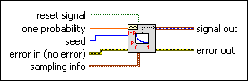

Bernoulli Noise Waveform VI
Owning Palette: Waveform Generation VIs
Requires: Full Development System
Generates a pseudorandom pattern of ones and zeros, where the probability of generating a one is one probability and the probability of generating a zero is (1–one probability).
If one probability is 0.7, each element of signal out has a 70% chance of being one and a 30% chance of being zero.

 Add to the block diagram Add to the block diagram |
 Find on the palette Find on the palette |